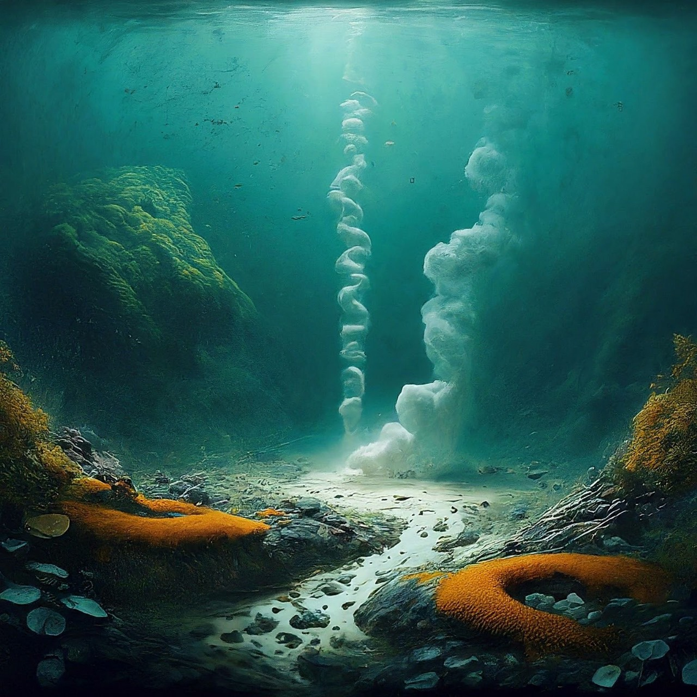

Abstract
Demonstrating the Box Model
Chemosynthetic communities in the deep-sea can be found at hydrothermal vents, cold seeps, whale falls and wood falls. While these communities have been suggested to exist in isolation from solar energy, much of the life associated with them relies either 5 directly or indirectly on photosynthesis in the surface waters of the oceans. The sun indirectly provides oxygen, a byproduct of photosynthesis, which aerobic chemosynthetic microorganisms require to synthesize organic carbon from CO2 . Planktonic life stages of many vent and cold seep invertebrates also directly feed on photosynthetically produced organic matter as they disperse to new vent and seep systems. While 10 a large portion of the life at deep-sea chemosynthetic habitats can be linked to the sun and so could not survive without it, a small portion of anaerobically chemosynthetic microorganisms can persist in its absence. These small and exotic organisms have developed a way of life in the deep-sea which involves the use of resources originating in their entirety from terrestrial sources.

Introduction
The Earth’s surface is dominated by organisms which depend on energy captured from the sun through the process of photosynthesis, either as primary producers or heterotrophic consumers. Until the discovery of chemosynthesis in 1887 by Winogradsky, alternatives to light energy for the production of organic carbon remained unknown 20 to science. Surprisingly, even after the process of chemosynthesis was observed, it was widely thought to be relatively insignificant as a mechanism of primary production (Van Dover, 2000). With the discovery of deep-sea hydrothermal vent systems in 1977 (Corliss et al., 1979), it became clear that chemosynthetic microorganisms were not only present in the deep sea where light energy from the sun is absent, but that 25 they supported large communities and assemblages of higher organisms. Hydrothermal vent, whale fall, wood fall, and cold seep communities are able to make use of the chemical energy found in elements such as sulphide and methane because of symbiotic relationships with chemosynthetic microorganisms and are thus able to thrive in an environment which is normally characterized as having an extreme food limitation (Rex et al., 2006). Much of the energy provided by photosynthetic primary production in the 5 surface waters, on which most other deep-water organisms depend, is exploited before it can make its way into the depths, leaving only about 1–20 % to sink past a depth of 1000 m where the last of the sun’s light rays can still be detected. In a paper on the geomicrobiology of deep sea hydrothermal vents, Jannasch and Mottl (1985) suggest that it was this “dependence of entire ecosystems on geothermal (terrestrial) rather 10 than solar energy” that made the discovery of the vent systems and other chemosynthetic communities in the deep sea so groundbreaking, prompting new theories into the origins of life (Wachtersh ¨ auser, 1988) and on the prospects of life on other planets in ¨ our own solar system (Van Dover, 2000). But is it true? Do chemosynthetic communities thousands of meters below the last rays of sunlight really exist in complete isolation 15 from the influence of the sun? Could such communities persist if the sun were to be removed from the equation altogether? In answering these questions we must first examine the chemical processes involved in chemosynthesis as well as the structure of the organisms and communities which rely on it.
Discussions
First observed in the deep sea in the 1970s, chemosynthesis is the process by which microorganisms are able to use chemical energy to generate organic carbon from inorganic sources. Basic biochemistry tells us that all metabolic processes, including chemosynthesis and photosynthesis, are comprised of three fundamental elements: an energy source, an electron donor, and a carbon source (Van Dover, 2000). In the case 25 of photosynthesis, light provides the energy while CO2 and H2O provide the source of carbon and electrons respectively .Like photosynthetic metabolism, chemosynthesis involves the conversion of inorganic CO2 into organic carbon compounds; the significant difference between the two is that in chemosynthesis, the reduction reactions are fueled by the potential energy found between different electron donors and acceptors. While a wide range of electron 5 donors are suitable for use by chemosynthetic microorganisms (see Fig. 2), the most significant for deep-sea communities are sulphide and methane (Jannasch and Mottl, 1985). Depending on the nature of the electron acceptor in the reaction, chemosynthesis may either be aerobic or anaerobic (Van Dover, 2000). As the name suggests, aerobic 10 chemosynthesis makes use of oxygen as the primary electron acceptor, while anaerobic chemosynthesis relies on a variety of acceptors such as nitrate, carbon dioxide, sulphur and sulphate. Reduction reactions involving oxygen tend to have a larger potential energy than those using alternative electron acceptors, and so aerobic chemosynthesis has the potential to produce more ATP and tends to dominate most deep-sea com15 munities (Jannasch, 1985; McCollom and Shock, 1997). Like plants, microorganisms that make use of aerobic chemosynthesis couple their reduction reaction to the conversion of CO2 into organic carbon compounds using the Calvin–Benson cycle (Van Dover, 2000). On the other hand, some microorganisms such as the Archaea that use anaerobic chemosynthesis have developed a more efficient pathway than the Calvin 20 cycle for the generation of ATP. Termed the reductive acetyl-coenzyme A pathway or the Wood–Ljungdahl pathway, after its founders, it requires approximately one ATP to be used in the generation of pyruvate while the Calvin–Benson cycle requires seven (Berg et al., 2010). During the process, acetyl-CoA is formed from two molecules of CO2 and then undergoes reductive carboxylation to generate the pyruvate used in the 25 further synthesis of cellular material (Jannasch, 1985). While a more efficient means of CO2 fixation, the reductive acetyl-CoA pathway is limited to anoxic environments, and indeed anaerobic chemosynthetic microorganisms seem to be limited in their distribution in deep-sea communities to locations that fit their anoxic needs, such as the hot plumes of hydrothermal vents and the subsurface sediments of cold seeps (Jannasch, 1985). To date, four distinct deep-sea habitats have been shown to provide the conditions and resources necessary to support significant chemosynthetic communities: hy5 drothermal vents, cold seeps, whale falls and wood falls. The chemosynthetic communities on whale and wood falls are opportunistic, capitalizing on the random appearance of large nutrient packages. Organic matter from the productive surface waters can occasionally find its way into the depths in the form of whale carcasses or sunken wood (Smith et al., 1989). Much of the easily accessible organic nutrients in these once in 10 a lifetime feasts are quickly consumed by large scavenging fish, such as sleeper sharks (Collins et al., 2005). However, anaerobic breakdown of whale bone lipids (Demming et al., 1997) and wood (Duperron et al., 2008; Gaudron et al., 2010) has been shown to produce sulphide. The decomposition of such materials can last for decades, providing chemical energy for sulphide-reducing chemoautotrophs (Van Dover, 2000). While in15 teresting, these chemosynthetic communities have a clear dependence on the sun, in that whales and trees directly make use of, or are themselves, photosynthetic primary producers. As such, the chemosynthetic communities which rely on the decomposition of whale carcasses and sunken wood in the deep sea would cease to exist without the sun. 20 In the case of hydrothermal vents and cold seeps, the search for life truly isolated from the sun becomes more interesting as geological phenomena linked to the movement of tectonic plates are responsible for the release of most of the necessary chemicals. Hydrothermal vents are areas where hot anoxic seawater, which can be rich in both volatile gases and metals, exits the seabed. These systems are the result of 25 spreading centers and hotspots associated with mid-ocean ridges (Van Dover, 2000). New evidence published in 2008 by Tolstoy et al. suggests that vent water begins its journey by traveling down conduits in the ridge axis caused by tectonic fracturing. As the water penetrates the crust and gradually heats, it becomes slightly acidic and anoxic, able to leach various metals and sulphur from the surrounding rock (Tivey,2007)

Conclusions
Given what we know about the community structure, biochemistry and geological processes involved in sustaining deep-sea chemosynthetic communities, is it correct to saythey depend solely on geothermal rather than solar energy? While deep-sea communities have often been characterized in the literature as “life without the sun” (Tunnicliffe, 1992), the notion is only partially true and can be misleading. Almost all of the observable biomass associated with deep-sea communities such as hydrothermal vents, cold 5 seeps, whale falls and wood falls depends on the action of aerobic chemosynthetic organisms which could not survive in complete isolation from the sun due to their oxygen requirement (Van Dover, 2000). Furthermore, invertebrates at deep-sea chemosynthetic sites vary in their direct reliance on photosynthesis, some require whale and wood falls either as direct providers of nutrients or as dispersal stepping stones, while 10 others survive on the products of photosynthetic primary production as planktonic larvae (Adams et al., 2012). However, even though the vast majority of life in these communities would die out without the sun, I believe that the more significant result of the discovery of these communities remains intact. To focus on aerobic chemosynthesis in the deep-sea is predictable, given how dominant the process is, but ignores the 15 fact it is not the only chemosynthetic lifestyle found at such sites. Anaerobic chemoautotrophs obtain both their electron acceptors and donors from geothermal processes, severing the last link to solar energy that their aerobic cousins could not (Boyle et al., 1985). What is truly significant about deep-sea chemosynthetic communities is not “how much” life lives in isolation from the sun, but the fact that any life at all accom20 plishes that feat. Although these small and seemingly insignificant microorganisms do not have the same impact in the deep as their aerobic counterparts, they serve a more fundamental purpose as reminders of the incredible adaptability of life. What could be more alien to us than organisms surviving in an anoxic environment thousands of meters below the surface of the ocean, living off energy obtained through geothermal and 25 not solar processes. The discovery of chemosynthetic communities in the deep sea, starting with hydrothermal vents in 1977 (Corliss et al., 1979), is possibly one of the most significant biological discoveries of the late 20th century. It had the effect of restructuring the general view on the importance of the sun and has been an area of significant research activity for the last 30 yr (Van Dover, 2000). Invertebrate hosts and chemosynthetic microorganisms form tight symbiotic relationships in the deep and have highlighted the ability for non-photosynthetic primary production to support large communities (Dubilier et al., 2000). While often characterized as communities in isolation from the sun, much 5 of the life on hydrothermal vents, cold seeps, whale and wood falls could not and would not exist in its absence. The underlying point however, that there exists life which does not require the sun at these sites, remains true. A small portion of organisms in the deep sea make use of anaerobic chemosynthesis which does not have the same free oxygen requirements as the aerobic version. Even as the majority of life on earth would 10 vanish without the sun, there exists the continued potential for a small group of lonely microorganisms to persist deep down in the perpetual darkness of our deepest seas